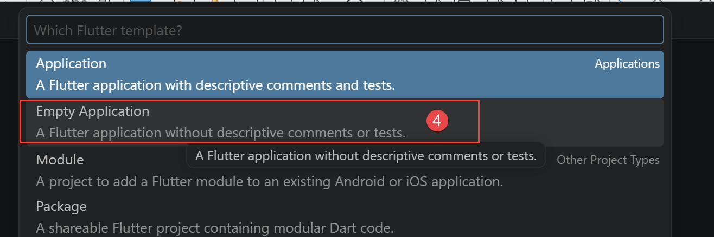
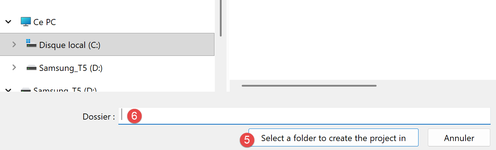
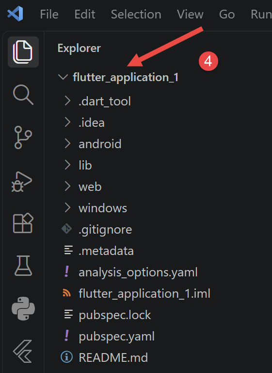
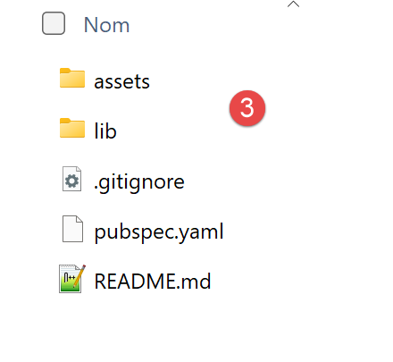
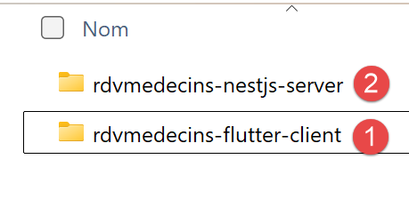
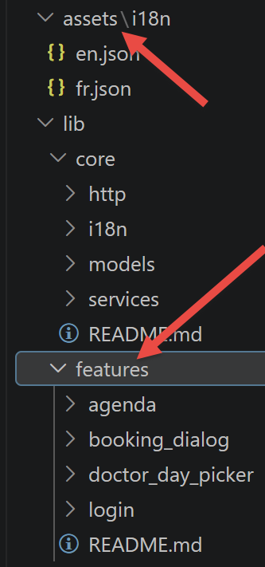
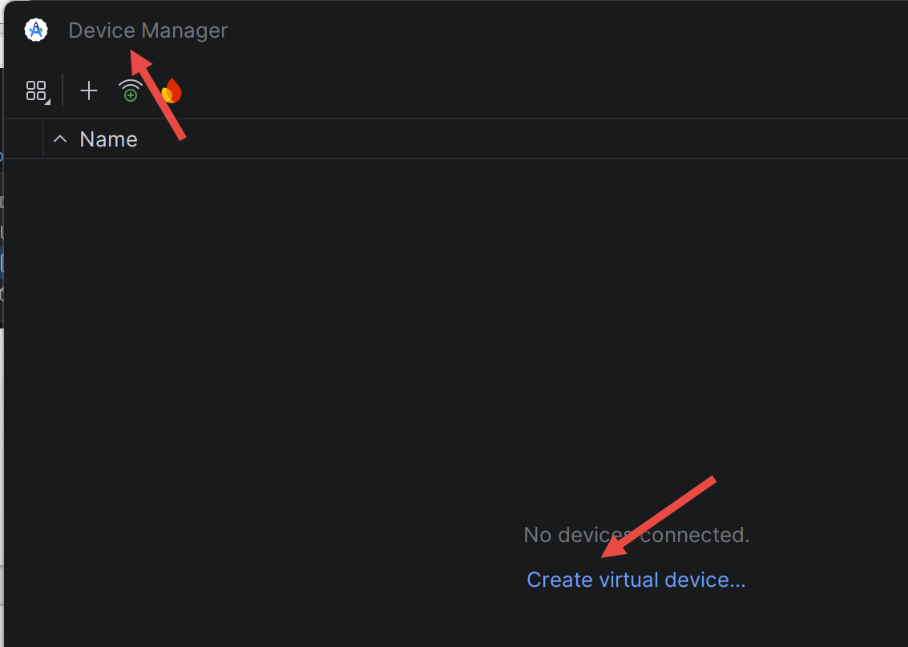
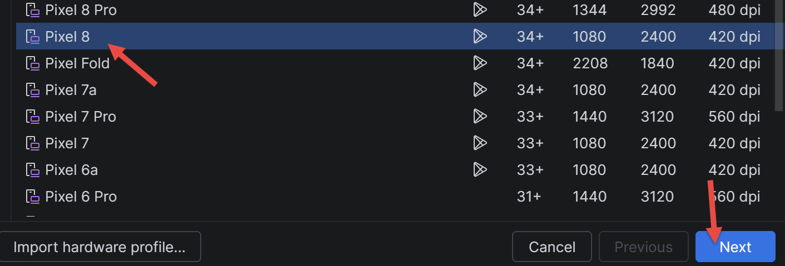
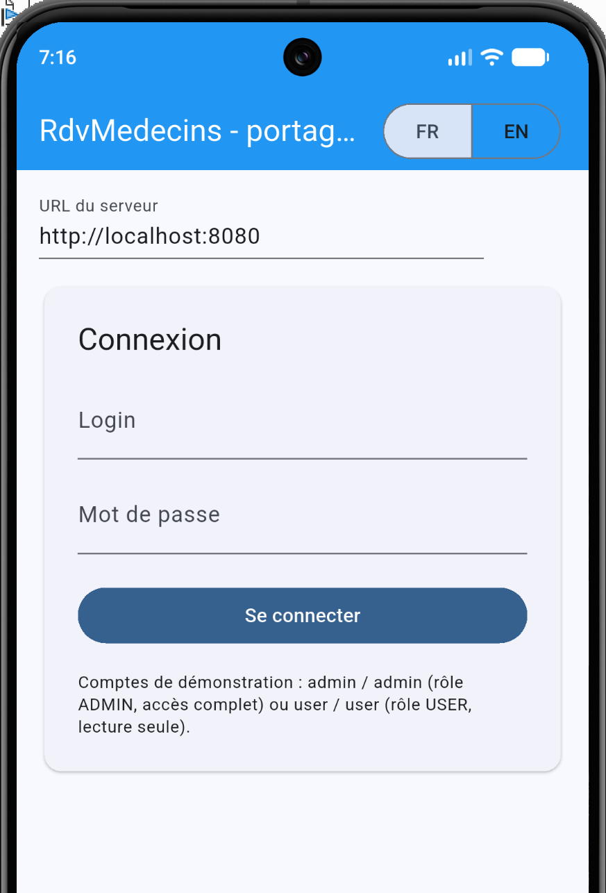

2. Chapter 1 - Setting Up the Work Environment
2.1. Install the tools
- Node.js: Download and install version 22 (or later) from nodejs.org. Verify the installation in a terminal:
- Visual Studio Code (VSCode): available for free download at code.visualstudio.com. Install the “TypeScript and JavaScript Language Features” extension (usually already included).
- [MySQL] 8: Install, for example, via XAMPP, Laragon (on Windows), or directly via [MySQL] Community Server. A graphical administration tool (phpMyAdmin, [MySQL] Workbench, DBeaver, HeidiSQL…) simplifies the process. Subsequently, the Laragon tool is used.
- Postman: available for free download at postman.com.
2.1.1. Installing the Flutter client
Launch VSCode without selecting a project:

- In [1-2], open the command palette;

- In [3], create a new Flutter project;

- in [4], create an empty app;

- In [5-6], specify a folder in which the project subfolder will be created;

- In [6], enter a name for the project. This will also be the name of the folder created for the project;

- In [1-3], specify the project targets for [1 – application Android, 2- application de bureau 3 – application web];

- to [4], the created project. VSCode automatically downloads SDK from Flutter;
If you have downloaded the code from this document, it is located in two folders:


- in [1], the client [Flutter];
- in [2], the [NestJS] server;
- in [3], the contents of [2]. Copy all of this content into your Flutter project folder. New elements will appear in your project:

The command [flutter doctor] verifies that everything [Flutter] needs is in place, target by target. Run this in a terminal within the Flutter project:
When everything is correct, you’ll get a result like this (version numbers may vary):
Each line begins with a symbol: [√] (everything is fine), [!] (warning: an element is missing, which doesn’t necessarily prevent the code from working), or [X] (error). For this course, the relevant lines are [Flutter], [Android toolchain] (compilation for a phone), [Android], and [Connected device] (at least one device detected, specifically the phone). The lines [Chrome] (web target) and [Visual Studio] (Windows target) apply only to those targets: A [!] or [X] on a target you are not using can be ignored.
If [Android toolchain] reports “cmdline-tools component is missing,” install [Android SDK Command-line Tools] (see below); if it reports “Android license status unknown,” accept the licenses (step 5). The [flutter doctor -v] command provides details on each check.
You can now launch the Flutter app even if the web service it needs to communicate with has not been launched. First, list the apps (devices) recognized by Flutter:
PS C:\Data\st-2026\dev\flutter-nestjs-sept-2026\rdvmedecins_flutter_client> flutter devices
Found 4 connected devices:
sdk gphone16k x86 64 (mobile) • emulator-5554 • android-x64 • Android 17 (API 37) (emulator)
Windows (desktop) • windows • windows-x64 • Microsoft Windows [version
10.0.26200.9457]
Chrome (web) • chrome • web-javascript • Google Chrome 153.0.8010.48
Edge (web) • edge • web-javascript • Microsoft Edge 153.0.4234.48
In column 2, you’ll find the IDs of the recognized devices devices. To launch the Flutter app on one of them:
For example, to launch the app in the Chrome browser with the identifier (chrome):
This produces the following result (or a server connection error):

You may not have installed the Android SDK required by Flutter. We’ll now describe how to install it.
2.1.2. Android Studio and Android Command-Line Tools
The mobile target for this course is a [Android] phone. To compile the app and install it on this phone, [Flutter] requires SDK and [Android], which are installed along with [Android Studio], Google’s development environment. [Android Studio] is not used for writing code—the editor remains [VSCode]—it is used here only to install and update SDK and [Android].
- [Android Studio]: Download it for free from [https://developer.android.com/studio] and then install it. When you launch it for the first time, the wizard will offer a standard installation: accept it, and it will download SDK and [Android].

- Open [SDK Manager] from [Android Studio] (the [Tools / SDK Manager] menu when a project is open, or [More Actions / SDK Manager] from the home screen): This is the tool that installs and updates the components of SDK and [Android].
- [SDK Platforms] tab: Verify that a recent [Android] platform is installed (the [Flutter] documentation specifies version 36 at the time of writing).

- [SDK Tools] tab: Check [Android SDK Command-line Tools (latest)], [Android SDK Build-Tools], and [Android SDK Platform-Tools] (as well as [Android Emulator] if you want to test on an emulator), then click [Apply]. The documentation for [Flutter] also recommends [CMake] and [NDK (Side by side)]. It is the [Android SDK Command-line Tools] packages that are missing when [flutter doctor] displays “cmdline-tools component is missing.”
- Accept the licenses for SDK and [Android] by typing the following command in a terminal within the Flutter project, then answering “[y]” to each question until you see the message “All SDK package licenses accepted.”:
[Remarque]: With version 23.0 of [Android SDK Command-line Tools], the command above may terminate immediately, without prompting for anything, displaying “The --licenses option is no longer needed.” This is a known issue in [Flutter] (issues 191558 and 191487 on github.com/flutter/flutter). Workaround: In [SDK Manager], [SDK Tools] tab, check [Show Package Details], replace version 23.0 of [Android SDK Command-line Tools] with version 22.0, click on [Apply], and then rerun the command.
2.1.3. Create on an Android emulator
If you don’t have a phone, you can test the app on a [Android] emulator: a virtual phone that runs in a window on your computer. [Android Studio] installs the [Android Emulator] program (if it was checked in the [SDK Manager], see above) but does not provide a ready-to-use virtual device: you must create one.
- [Prérequis]: Virtualization must be enabled in the computer’s [BIOS], and under [Windows], the [Plateforme de l'hyperviseur Windows] feature must be checked ([Panneau de configuration / Programmes / Activer ou désactiver des fonctionnalités Windows]), which requires a restart. Otherwise, the emulator will not start or will remain very slow.
- Open [Device Manager] from [Android Studio]: [More Actions / Virtual Device Manager] from the home screen, or [Tools / Device Manager] when a project is open (depending on the version: [View / Tool Windows / Device Manager]).

- Click on [Create Device], select a template (for example, [Pixel 8]), then [Next]. Select a recent [Android] system image for the [x86_64] processor and download it using the [Download] link located next to it, then [Next] and [Finish].



- Start the emulator using the [Play] button on the [Device Manager], or from a terminal (the first command lists the emulators and their IDs):

- Wait until the [Android] welcome screen appears in the emulator window: the first startup may take several minutes. Then verify that [Flutter] recognizes the emulator, which should appear in the list (for example, [emulator-5554], platform [android-x64]):
PS C:\Data\st-2026\dev\flutter-nestjs-sept-2026\rdvmedecins_flutter_client> flutter devices
Found 4 connected devices:
sdk gphone16k x86 64 (mobile) • emulator-5554 • android-x64 • Android 17 (API 37) (emulator)
Windows (desktop) • windows • windows-x64 • Microsoft Windows [version
10.0.26200.9457]
Chrome (web) • chrome • web-javascript • Google Chrome 153.0.8010.48
Edge (web) • edge • web-javascript • Microsoft Edge 153.0.4234.48
[Remarque]: if [flutter devices] does not display the emulator but instead shows the message “Device emulator-5554 is offline,” the emulator has not finished starting up, or [adb] (the tool that connects the computer to the device, installed along with [Android SDK Platform-Tools]) is in an inconsistent state. Try the following in order: (1) wait for the welcome screen to appear, then rerun the command; (2) restart [adb] using the following three commands (in [Windows], within [PowerShell]), with the last one displaying “device” rather than “offline”; (3) In the [Device Manager], under the device’s [⋮] menu, select [Cold Boot Now], or even [Wipe Data] as a last resort.
If the problem persists, use [where.exe adb] to verify that no other [adb], of a different version, is present in the [PATH]: Two versions of [adb] competing for the connection cause this issue.
Once the emulator is recognized, the application launches on it with the following command. Note: In the emulator, [localhost] refers to the emulator itself and not the computer; the “URL on the server” field must contain [http://10.0.2.2:8080] (see Chapter 5).

2.1.4. Preparing the Android phone
To run the app on a real [Android] phone, the phone must be set to allow control from the computer:
- Enable developer options: open [Paramètres / À propos du téléphone], then tap [Numéro de build] several times (usually 7) until the phone indicates that you are a developer. The exact labels vary by manufacturer.
- Enable [Débogage USB] in the [Options pour les développeurs] menu (added in the previous step).
- Connect the phone to the computer using a USB cable that transfers data (not just charges the phone), and accept the USB debugging permission request on the phone. On Windows, if the phone is not recognized, install the manufacturer’s driver USB (“OEM USB drivers,” see [https://developer.android.com/studio/run/oem-usb]).
- Verify that [Flutter] detects the phone: it should appear in the list displayed by the following command, along with the [android] platform:
The phone will access the [NestJS] server via the computer’s IP address on the local network (and not via [localhost]): this configuration is described in Chapter 5.